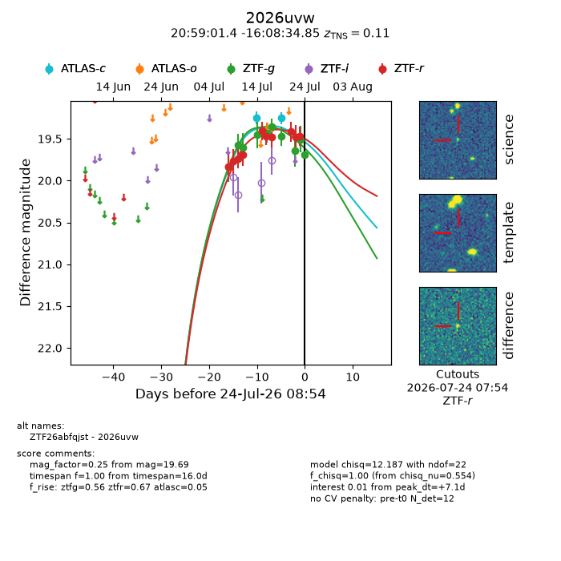
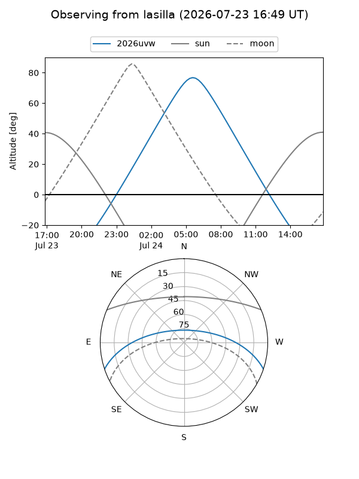
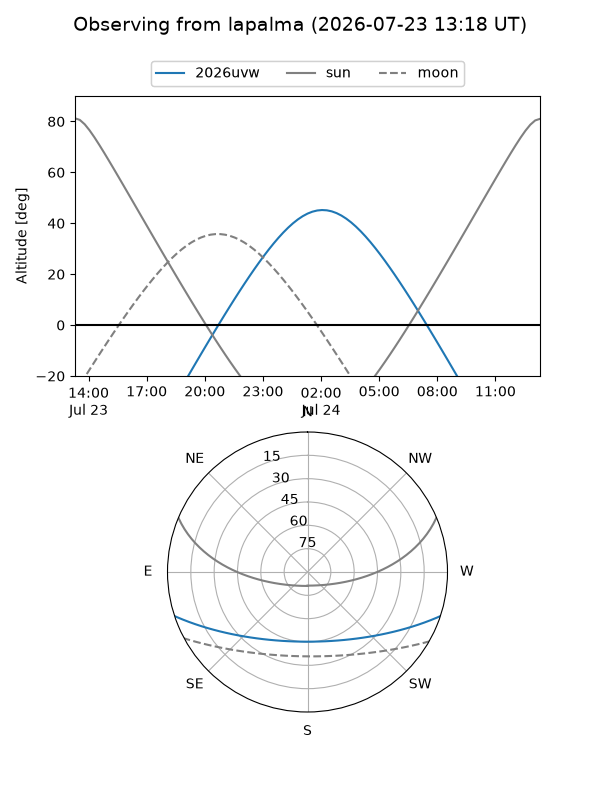
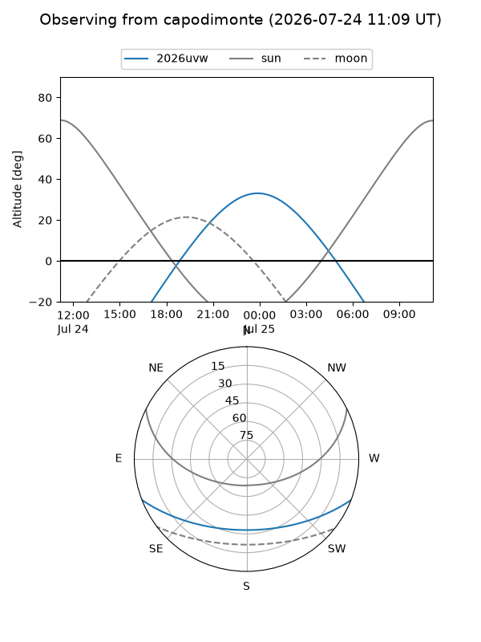
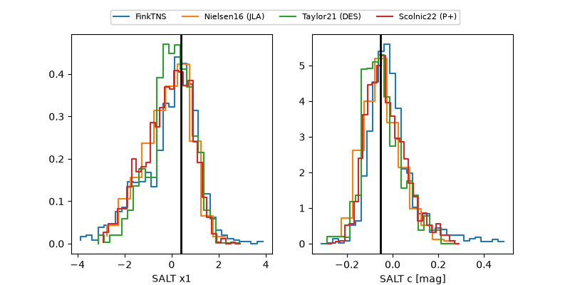

2026uvw
Target 2026uvw at 2026-07-24 08:56
Aliases and brokers:
FINK-ZTF: ztf.fink-portal.org/ZTF26abfqjst
Lasair-ZTF: lasair-ztf.lsst.ac.uk/objects/ZTF26abfqjst
ALeRCE-ZTF: alerce.online/object/ZTF26abfqjst
YSE-PZ: ziggy.ucolick.org/yse/transient_detail/2026uvw
TNS name: wis-tns.org/object/2026uvw
Direct TNS query: direct search
alt names
ZTF26abfqjst (ztf,fink_ztf)
2026uvw (tns,yse)
Coordinates:
equatorial (ra, dec) = 314.7557,-16.14301
equatorial (HMS+DMS) = 20:59:01.36,-16:08:34.85
galactic (l, b) = (31.8069,-35.34453)
Flags:
TNS type: SN Ia
TNS redshift: 0.1100
peak dt: +7.1
Photometry:
last atlasc=19.25, ztfg=19.69, ztfr=19.47
2 atlasc, 10 ztfg, 10 ztfr detections
Lightcurve

Visibility



Additional plots
